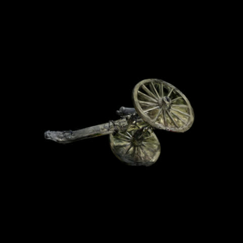

Provenance: Cannon

Place: Wilson's Creek, Missouri
Captured: 2026-08-30 10:12 to 10:15
Device: Apple iPhone 17 Pro Max; 24 mm equiv.
Photographs: 60 taken, 57 registered by structure-from-motion
Camera solve
- Solver: pycolmap 4.2.0, incremental mapping
- Camera model: SIMPLE_RADIAL, 5712 x 4284 px
- Registered views: 57 of 60
- Sparse points: 13,841
- Mean reprojection error: 1.31 px
- Mean track length: 3.28
Masks
- 60 subject masks (Grounding DINO + SAM 2), applied as the alpha channel of each training image with the background colour zeroed
- The trainer matches transparency outside the subject, so nothing is rendered there: the piece is isolated and the wind-moved grass never enters the model
Training
- Trainer: brush_app via recipe
splat-brush - Steps: 30000; training resolution (long side): 1920 px; seed 42
- Splat cap: 1,500,000
- Result: 177,579 splats in 589.6 s
- Raw PLY sha256: 95ed0043d6af7d5a...
Delivered files
cannon.sog- 2.2 MB, sha256 30b7e4b7c130da98...
Processing
- Pipeline: squatch-gallery tools at commit d2d2169; cleaning by
tools/clean_export.py(opacity floor, mass-centered subject crop, fog cull) - Sheet generated 2026-09-05 01:53 UTC from the files above; nothing entered by hand except title and place.
- License: CC BY 4.0 unless the commissioning agreement states otherwise.